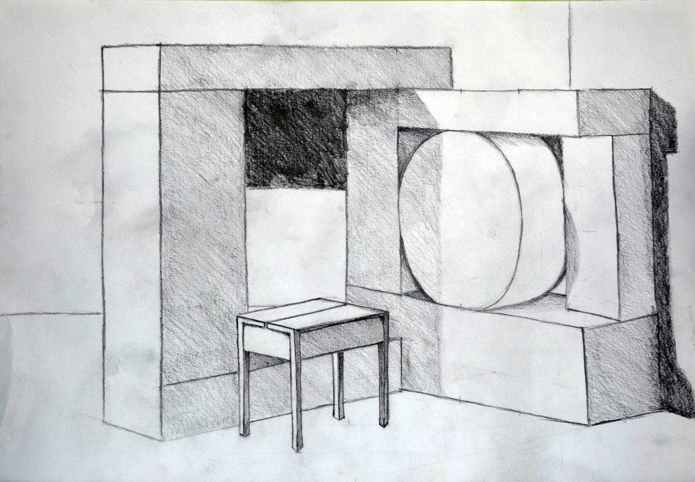

3.
képcsoport
Az itt szereplő rajzaim fejlődésem következő szakaszát mutatják be, és már
közelebb áll ahhoz, amit jelenleg is tanulok a terméktervező szakon.
Már nemcsak alapvető térbeli testeket ábrázoltunk, hanem megjelentek a
bonyolultabb szerkezetű tárgyak is. a székek ábrázolása már részletezőbb,
finomabb ábrázolást követel meg tőlem. Ezeken a képeken javult a vonalvezetésem
és az árnyékolástechnikám is. Ezek még fekete-fehérben készült rajzok, de az
árnyalatok már sokkal részletezőbbek, mint az első csoportban található képek
esetében.
